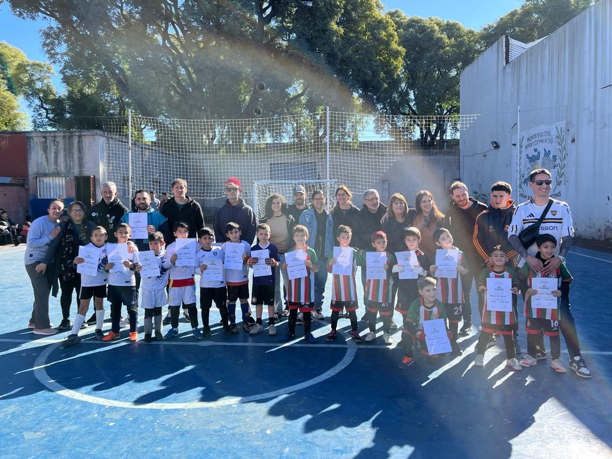

Deportiva
Ampliamos oportunidades de práctica y participación en clubes e instituciones.

Conocenos
Comunidad Social Deportiva nace para promover el valor del deporte y acompañar a instituciones que construyen encuentro, pertenencia y desarrollo.
Nuestra historia
Comunidad Social Deportiva nació con la intención de promover el valor del deporte y fue creciendo a medida que se identificaban distintas necesidades.
Hoy en día es un espacio integrador que reúne a clubes, federaciones, instituciones deportivas, empresas, profesionales y miembros de la comunidad, con el objetivo de potenciar el deporte como herramienta de transformación social.
Es un espacio de encuentro, colaboración y desarrollo, donde confluyen múltiples actores del ecosistema deportivo y social para generar un impacto positivo en barrios, instituciones y personas.
Nuestra misión
Nuestra misión es generar un enlace entre distintos actores de la sociedad para trabajar en un objetivo común y ser un punto de apoyo y articulación entre organizaciones. Partimos de una convicción simple: colaborando y tejiendo redes, podemos hacer mucho más.
Mirada integral
Trabajamos con una perspectiva deportiva, educativa, cultural y ambiental, promoviendo un crecimiento colectivo y sostenible.
Ampliamos oportunidades de práctica y participación en clubes e instituciones.
Generamos instancias formativas para dirigentes, familias y deportistas.
Impulsamos puntos de encuentro que fortalecen identidad, vínculos y pertenencia.
Integramos acciones sostenibles en la vida cotidiana de los espacios comunitarios.